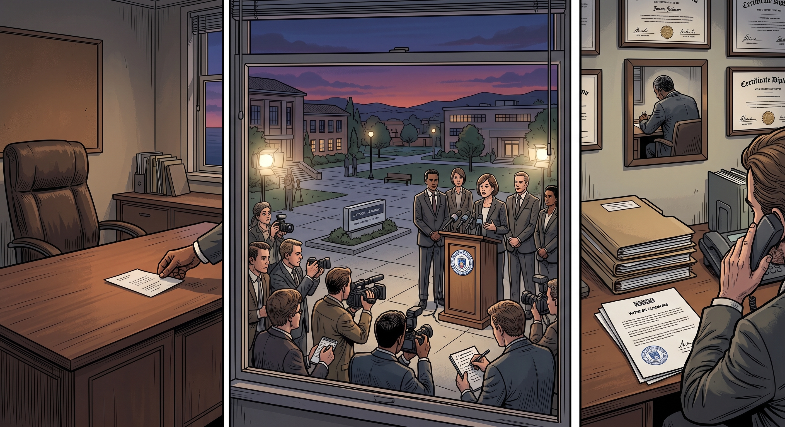

新官上任(補丁篇)

一、董事會的切割
暗房案件正式曝光後不到三週,布萊克威爾學院董事會就召開了一場緊急閉門會議——會議結果毫無懸念:時任校長 Wells,因長期對 Nathan Prescott 的異常行為視而不見、對 Kate Marsh 的求助敷衍處理、且被證實在多起校園安全問題上偏袒 Prescott 家族的資助利益,遭到董事會全票通過解除職務。
沒有記者會,沒有體面的歡送辭。舊校長的辦公室在一個平常的週二早晨被靜悄悄清空,他的名字從學校官網和所有官方文件上迅速抹去,退休金和榮譽頭銜也一併化為烏有。往後的日子裡,他大半時間都耗在律師事務所和法庭之間,應付一場又一場的民事訴訟和證人傳喚。
董事會迅速召開記者會,宣布已經啟動全國範圍的校長遴選,承諾將以「最嚴格的標準」重建學院聲譽。
二、新校長上任
三個月後,一位新校長正式走馬上任。
新聞稿裡,校方用詞謹慎而積極——「豐富的教育管理經驗」「致力於校園安全與學生福祉」「將帶領布萊克威爾邁向嶄新篇章」。
而這位新校長的名字,恰好也叫 Wells。
純屬巧合。
董事會秘書處在對外說明會上,特地花了整整一分鐘,鄭重澄清這兩位 Wells 校長之間,沒有任何血緣或姻親關係,純粹是這個姓氏,剛好在候選名單裡撞了名——但沒有人在意這個解釋,鎮上的居民私下議論起來,大多只是聳聳肩,半開玩笑地說「這學校跟 Wells 這個姓,大概是犯沖了吧」。
新任 Wells 校長上任第一天,便在全校集會上,慷慨激昂地發表了一篇關於「重建信任、擁抱透明治理」的就職演說,台下的教職員和學生,大多只是禮貌性地鼓掌,沒有人真的抱太大期待。
畢竟,他們心裡都清楚,不管換上哪一個姓 Wells 的人,布萊克威爾這套運作了幾十年的體制慣性,大概率不會因為換了一張辦公室的名牌,就有什麼真正的改變。
(此篇作為世界觀補丁:自本篇之後,故事正文中出現的「Wells 校長」,均指這位案發後空降上任的新校長,與原任校長並無關聯。)